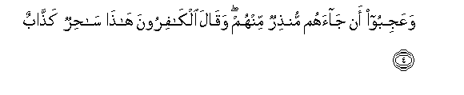
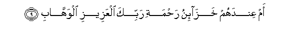

Sacred Texts Islam Index
Hypertext Qur'an Unicode Palmer Pickthall Yusuf Ali English Rodwell
Sūra XXXVIII.: Ṣād (being one of the Abbreviated Letters). Index
Previous Next

The Holy Quran, tr. by Yusuf Ali, [1934], at sacred-texts.com
Sūra XXXVIII.: Ṣād (being one of the Abbreviated Letters).
Section 1
1. Sad waalqur-ani thee alththikri
1. Sād:
By the Qur-ān,
Full of Admonition:
(This is the Truth).
2. Bali allatheena kafaroo fee AAizzatin washiqaqin
2. But the Unbelievers
(Are steeped) in Self-glory
And Separatism.
3. Kam ahlakna min qablihim min qarnin fanadaw walata heena manasin
3. How many generations
Before them did We destroy?
In the end they cried
(For mercy)—when
There was no longer time
For being saved!

4. WaAAajiboo an jaahum munthirun minhum waqala alkafiroona hatha sahirun kaththabun
4. So they wonder
That a Warner has come
To them from among themselves!
And the Unbelievers say,
"This is a sorcerer
Telling lies!
5. AjaAAala al-alihata ilahan wahidan inna hatha lashay-on AAujabun
5. "Has he made the gods
(All) into one God?
Truly this is
A wonderful thing!"
6. Waintalaqa almalao minhum ani imshoo waisbiroo AAala alihatikum inna hatha lashay-on yuradu
6. And the leaders among them
Go away (impatiently), (saying),
"Walk ye away, and remain
Constant to your gods!
For this is truly
A thing designed (against you)!
7. Ma samiAAna bihatha fee almillati al-akhirati in hatha illa ikhtilaqun
7. "We never heard (the like)
Of this among the people
Of these latter days:
This is nothing but
A made-up tale!"
8. Aonzila AAalayhi alththikru min baynina bal hum fee shakkin min thikree bal lamma yathooqoo AAathabi
8. "What! Has the Message
Been sent to him—
(Of all persons) among us?"…
But they are in doubt
Concerning My (own) Message!
Nay, they have not yet
Tasted My Punishment!

9. Am AAindahum khaza-inu rahmati rabbika alAAazeezi alwahhabi
9. Or have they the Treasures
Of the Mercy of thy Lord,—
The Exalted in Power,
The Grantor of Bounties
Without measure?
10. Am lahum mulku alssamawati waal-ardi wama baynahuma falyartaqoo fee al-asbabi
10. Or have they the dominion
Of the heavens and the earth
And all between? If so,
Let them mount up
With the ropes and means
(To reach that end)!
11. Jundun ma hunalika mahzoomun mina al-ahzabi
11. But there—will be
Put to flight even a host
Of confederates.
12. Kaththabat qablahum qawmu noohin waAAadun wafirAAawnu thoo al-awtadi
12. Before them (were many
Who) rejected apostles,—
The People of Noah,
And ‘Ād, and Pharaoh
The Lord of Stakes,
13. Wathamoodu waqawmu lootin waas-habu al-aykati ola-ika al-ahzabu
13. And Thamūd, and the People
Of Lūṭ, and the Companions
Of the Wood;—such were
The Confederates.
14. In kullun illa kaththaba alrrusula fahaqqa AAiqabi
14. Not one (of them) but
Rejected the apostles,
But My Punishment
Came justly and inevitably
(On them).